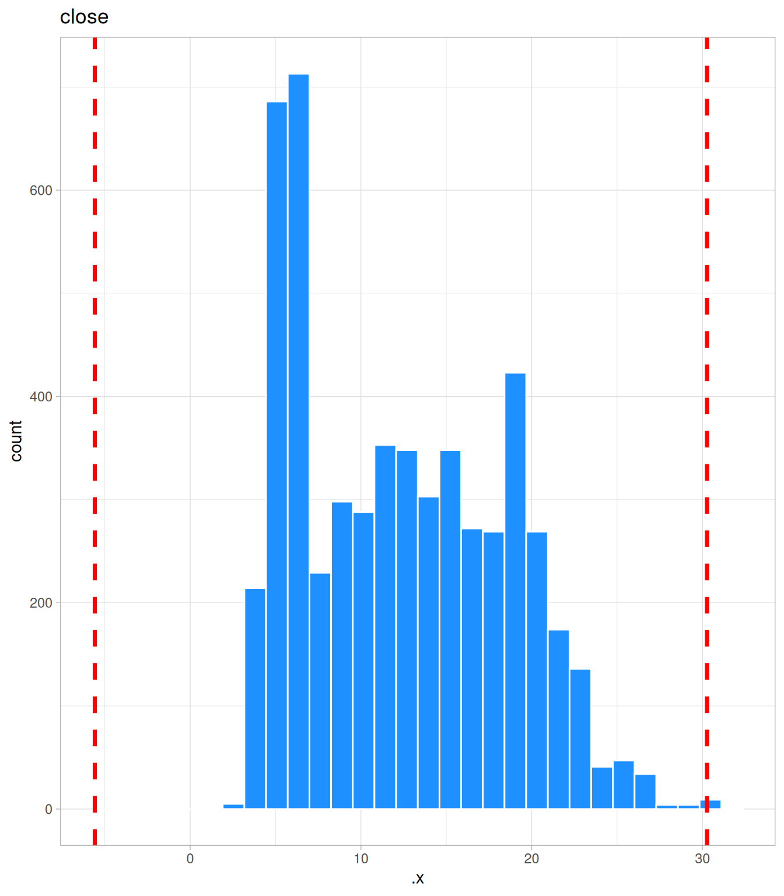
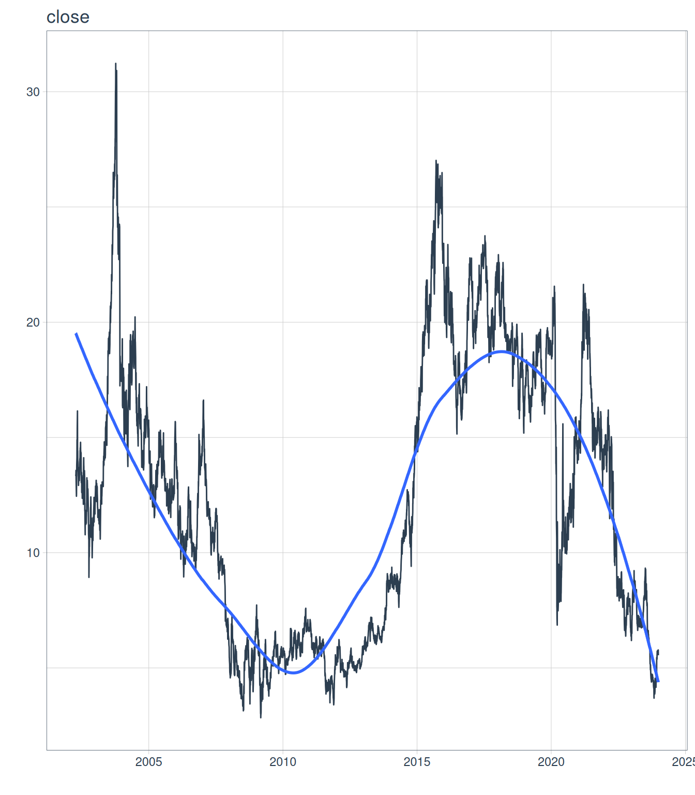
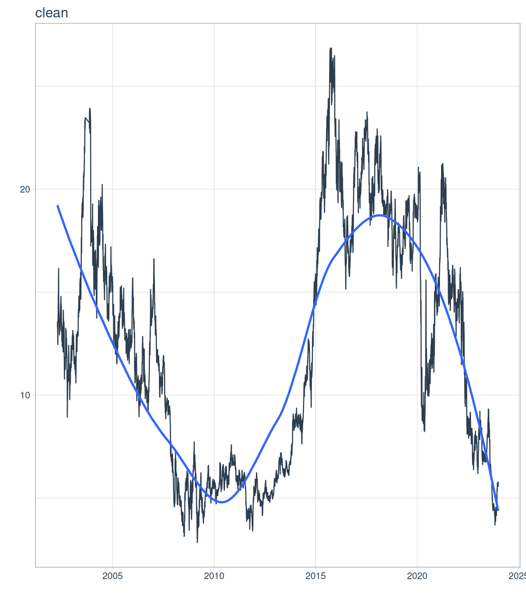
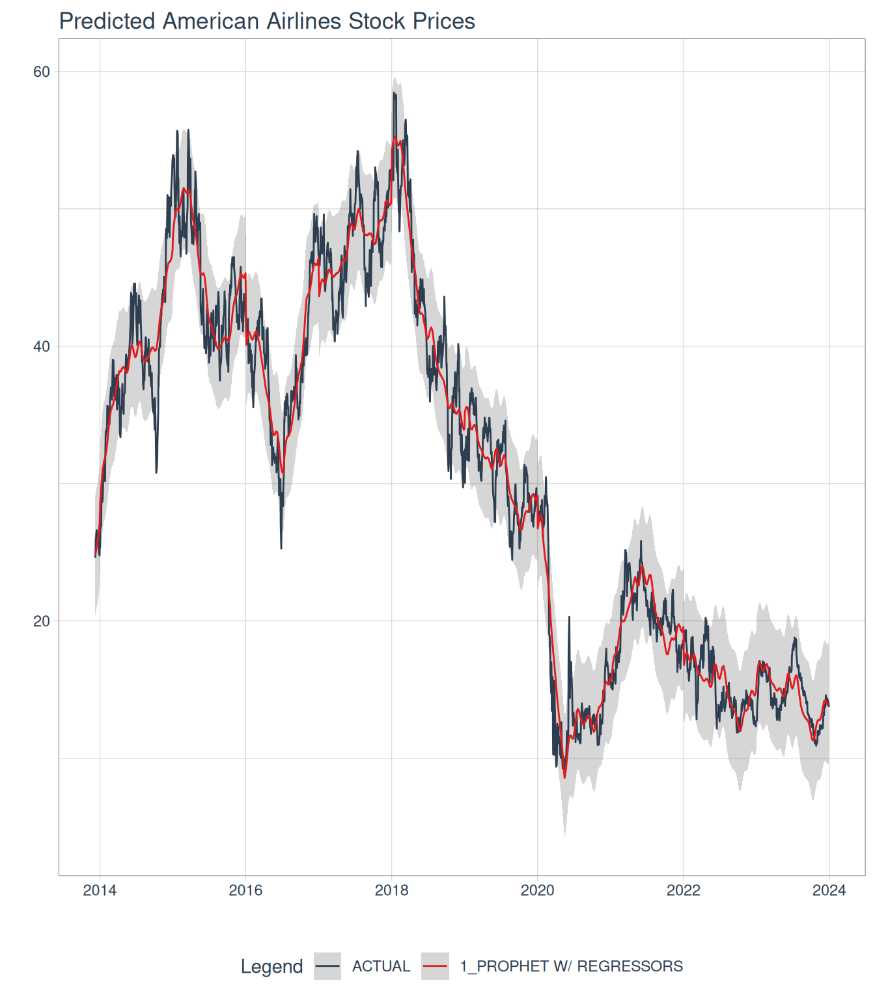

Code
library(tidyverse)
library(tidymodels)
library(prophet)
library(lubridate)
library(modeltime)
library(timetk)
NOTE: This is for practicing forecasting skills and should not be seen as a guide for predicting stock prices.
After some reading, I finally have a good understanding of how to utilize forecasting for time-series analyses. This post started because even after a BA, 2 masters degrees, and a doctorate, my brother still has no clue what I do. He, along with most of my family think I am a Clinical Psychologist.
So for me to try and make my brother understand what I do, I thought I would show him with something that he has become interested in recently; stocks. So for this post, I’ll
load stock data from Google Finance
visualize some data
train a prophet model
test that prophet model
see how well that model predicts other stock data
Below are all the sites for the packages I used.
library(tidyverse)
library(tidymodels)
library(prophet)
library(lubridate)
library(modeltime)
library(timetk)To load the Google Finance data, I decided to pick a stock that my brother had, which in this case was JetBlue. A cool feature about Google Finance and Google Sheets is that you can use the following formula in a Google Sheet on the first cell of the first column =GOOGLEFINANCE("JBLU", "price", DATE(2000,1,1), DATE(2024, 1, 1), "DAILY") and it will give you the date and stock closing values for whatever period you’d like. The example above provides Google financial data for JBLU or the abbreviation for JetBlue stock. It also provides the price of the stock from the first day that there is data on JetBlue stocks, which in this case is April 12th 2002. You can also choose the interval of time for the stock prices. I decided to look at daily data because I have several years of data.
Here I have a copy of my Google Sheet for JetBlue that I will use to train and test my Prophet model. Instead of having a .csv file on my local machine, I decided to keep this on Google Drive so that it constantly updates with the Google Finance function. This meant that I had to use the googlesheets4 package to load the data from a Google Sheet. I also changed the name and class of the date variable to make it a date variable instead of a date and time variable.
googlesheets4::gs4_deauth()
theme_set(theme_light())
jet <- googlesheets4::read_sheet("https://docs.google.com/spreadsheets/d/1SpRXsC3kXDaQLUfC6cPIOvsqxDF6updhgHRJeT8PTog/edit#gid=0", sheet = 1) |>
janitor::clean_names() |>
mutate(ds = as_date(date))Based on some visualizations below, I also decided to create some additional variables from the date variable. Specifically, I used lubridate's wday() function to create a new variable that gives you the actual day from the corresponding cell’s date. I also used the ts_clean_vec function from time_tk to clean for outliers in the stock price values. There are additional arguments for the function, like applying a Box-Cox transformation but that is for a multiplicative trend, which this model does not appear to fit since the variation in the outcome does not grow exponentially. I’ll also include 2002 as the reference year for the year variable and make sure that my data is arranged by date.
jetblue <- jet |>
mutate(actual_day = wday(ds,
label = TRUE),
clean = ts_clean_vec(close)) |>
separate(col = date,
into = c('year_num', 'month_num', 'day_num'),
sep = '-') |>
mutate(year_num = as.factor(year_num),
year_num = relevel(year_num, ref = '2002')) |>
separate(col = day_num,
into = c('day_num', 'drop'),
sep = ' ') |>
mutate(day_num = as.numeric(day_num),
month_num = as.factor(month_num)) |>
select(-drop) |>
arrange(ds)Starting with some quick visualizations, we can see that the only area that there is a difference in the variation of the stock prices is in the beginning of 2020. I wonder what that could have been.
jetblue |>
group_by(year_num, month_num) |>
summarize(var_value = sd(close)^2) |>
ungroup() |>
ggplot(aes(month_num, var_value)) +
geom_point() +
facet_wrap(vars(year_num))Next, we can look at the histograms for the outcome of interest. If we look at the histograms, we can see that there are potential outliers in the original stock prices data. We can also see that cleaning the variable removed the potential outliers.
only_numeric <- jetblue |>
select(close, clean)
map2(only_numeric,
names(only_numeric),
~ggplot(data = only_numeric,
aes(.x)) +
geom_histogram(color = 'white',
fill = 'dodgerblue') +
geom_vline(xintercept = mean(.x) +
sd(.x) +
sd(.x) +
sd(.x),
color = 'red',
size = 1.25,
linetype = 2) +
geom_vline(xintercept = mean(.x) -
sd(.x) -
sd(.x) -
sd(.x),
color = 'red',
size = 1.25,
linetype = 2) +
labs(title = .y))$close
$cleanThere will also be a lot of use of the purrr package and the map functions, which are part of the tidyverse. We can also see that in the plot series visualization using modeltime's plot_time_series function, that the cleaned stock prices remove the outliers. So from here on out, I’ll be using the cleaned stock prices.
map2(only_numeric,
names(only_numeric),
~only_numeric |>
plot_time_series(jetblue$ds,
.x,
.interactive = FALSE) +
labs(title = .y))$close
$clean
We can also look for anomalies, or points that deviate from the trend. Using the plot_anomaly_diagnostics function from the modeltime package, I can see all the anomalies in the data. I also used ggplot to create my own visualization using the same data. Lastly, we’ll deal with those anomalies by removing them from the dataset. This is not too much of a problem because the Prophet model should be able to handle this fairly easy.
jetblue |>
plot_anomaly_diagnostics(ds,
clean,
.facet_ncol = 1,
.interactive = FALSE)jetblue |>
tk_anomaly_diagnostics(ds,
clean) |>
ggplot(aes(ds, observed)) +
geom_line() +
geom_point(aes(color = anomaly)) +
viridis::scale_color_viridis(option = 'D',
discrete = TRUE,
begin = .5,
end = 0)anomaly <- jetblue |>
tk_anomaly_diagnostics(ds,
clean)
jetblue <- left_join(jetblue, anomaly) |>
filter(anomaly != 'Yes')We can also look into additional regressors to include in the model by looking into seasonality. We can see some fluctuation in stock prices across the years. We’ll include the year variable as another regressor on the stock prices.
jetblue |>
plot_seasonal_diagnostics(ds,
clean,
.interactive = FALSE)Before we begin, I’m going to designate 10 cores to process any models run.
set.seed(05262022)
parallel::detectCores()[1] 12parallel_start(10,
.method = 'parallel')First, instead of the normal initial_split used for training and testing splits, we’ll use the initial_time_split function from tidymodels to separate the first 80% of the data into training set and the last 20% into the testing set.
set.seed(05262022)
jet_split <- initial_time_split(jetblue)I decided to create my own Prophet function to be able to use for both training the model and testing it. In this function, I’ve also included parameters that can be changed to see if the model performs better or worse. Lastly, the train = TRUE allows us to practice with the training dataset and then when we’re happy with the model, we can use it to test our model. For our model, we’ll be predicting stock prices with date and comparing each year to the reference year (2002).
prophet_mod <- function(splits,
changepoints = .05,
seasonality = .01,
holiday = .01,
season_type = 'additive',
day_season = 'auto',
week_season = 'auto',
year_season = 'auto',
train = TRUE){
library(tidyverse)
library(tidymodels)
library(modeltime)
library(prophet)
analy_data <- analysis(splits)
assess_data <- assessment(splits)
model <- prophet_reg() |>
set_engine(engine = 'prophet',
verbose = TRUE) |>
set_args(prior_scale_changepoints = changepoints,
prior_scale_seasonality = seasonality,
prior_scale_holidays = holiday,
season = season_type,
seasonality_daily = day_season,
seasonality_weekly = week_season,
seasonality_yearly = year_season) |>
fit(clean ~ ds + year_num,
data = analy_data)
if(train == TRUE){
train_cali <- model |>
modeltime_calibrate(new_data = analy_data)
train_acc <- train_cali |>
modeltime_accuracy()
return(list(train_cali, train_acc))
}
else{
test_cali <- model |>
modeltime_calibrate(new_data = assess_data)
test_acc <- test_cali |>
modeltime_accuracy()
return(list(test_cali, test_acc))
}
}It is worth noting that I’m using the modeltime package to run the prophet model because I believe it is easier to use (especially for later steps) than from Prophet, but both can be implemented in this function. Let’s try running this model with the some random parameters I chose from the Prophet website until realizing that the modeltime parameters are log transformed.
set.seed(05262022)
baseline <- prophet_mod(jet_split,
train = TRUE) |>
pluck(2)
baseline# A tibble: 1 × 9
.model_id .model_desc .type mae mape mase smape rmse rsq
<int> <chr> <chr> <dbl> <dbl> <dbl> <dbl> <dbl> <dbl>
1 1 PROPHET W/ REGRESSORS Fitted 1.01 9.06 4.68 8.86 1.37 0.950So with the model, we can see that the Mean Absolute Scaled Error (MASE) is 4.6774069 and the Root Mean Square Error (RMSE) is 1.3720952. Not bad for an initial run. Let’s look at how the model fits the training data.
prophet_mod(jet_split,
train = TRUE) |>
pluck(1) |>
modeltime_forecast(new_data = training(jet_split),
actual_data = jetblue) |>
plot_modeltime_forecast(.interactive = FALSE) +
labs(title = 'Prophet Baseline Model')So the model appears to follow the trend line. We’ll try to tune some of these parameters to see if we can make the model better.
Now, I’ll tune the prior scale values for the model. I’ll use the grid_latin_hypercube from the dials package in tidymodels to choose 5 sets of parameter values to run. I’m also using the rolling_origin from the rsample package in tidymodels because we are working with time series data. This does not create random samples but instead has samples with data points with consecutive values.
set.seed(05262022)
proph_model <- prophet_reg() |>
set_engine(engine = 'prophet',
verbose = TRUE) |>
set_args(prior_scale_changepoints = tune(),
prior_scale_seasonality = tune(),
prior_scale_holidays = tune(),
season = 'additive',
seasonality_daily = 'auto',
seasonality_weekly = 'auto',
seasonality_yearly = 'auto')
proph_rec <-
recipe(clean ~ ds + year_num,
data = training(jet_split))
set.seed(05262022)
train_fold <-
rolling_origin(training(jet_split),
initial = 270,
assess = 90,
skip = 30,
cumulative = TRUE)
set.seed(05262022)
grid_values <-
grid_latin_hypercube(prior_scale_changepoints(),
prior_scale_seasonality(),
prior_scale_holidays(),
size = 5)
set.seed(05262022)
proph_fit <- tune_grid(object = proph_model,
preprocessor = proph_rec,
resamples = train_fold,
grid = grid_values,
control = control_grid(verbose = TRUE,
save_pred = TRUE,
allow_par = TRUE))
tuned_metrics <- collect_metrics(proph_fit)
tuned_metrics |>
filter(.metric == 'rmse') |>
arrange(mean)
# saveRDS(tuned_metrics, file = 'tuned_metrics.rds')metrics <-
readr::read_rds(here::here('posts/2024-11-14-prophet-model/tuned_metrics.rds'))
metrics |>
filter(.metric == 'rmse') |>
arrange(mean)# A tibble: 5 × 9
prior_scale_changepoints prior_scale_seasonality prior_scale_holidays .metric
<dbl> <dbl> <dbl> <chr>
1 3.53 0.0170 1.12 rmse
2 0.00139 0.00166 0.00172 rmse
3 0.884 36.4 0.0131 rmse
4 0.0549 0.261 0.231 rmse
5 43.0 3.80 12.2 rmse
# ℹ 5 more variables: .estimator <chr>, mean <dbl>, n <int>, std_err <dbl>,
# .config <chr>For the sake of not waiting for this to render, I decided to make a RDS file of the metrics gathered from the tuned Prophet model. We can see that the RMSE value was 2.52 and the prior scale changepoint value was 3.53, the prior scale seasonality value was 0.02, and the prior scale holiday value was 1.
I then decided to run the prophet model on the training dataset with the new parameter values.
final_train <- prophet_mod(jet_split,
changepoints = 3.53,
seasonality = .017,
holiday = 1.12,
train = TRUE) |>
pluck(2)
final_train# A tibble: 1 × 9
.model_id .model_desc .type mae mape mase smape rmse rsq
<int> <chr> <chr> <dbl> <dbl> <dbl> <dbl> <dbl> <dbl>
1 1 PROPHET W/ REGRESSORS Fitted 0.864 7.59 4.00 7.49 1.20 0.962prophet_mod(jet_split,
changepoints = 3.53,
seasonality = .017,
holiday = 1.12,
train = TRUE) |>
pluck(1) |>
modeltime_forecast(new_data = training(jet_split),
actual_data = jetblue) |>
plot_modeltime_forecast(.interactive = FALSE) +
labs(title = 'JetBlue Stock Prices - Training Model')We can see that when using the whole training set, we have a RMSE of 1.2 and a MASE of 4 so both metrics reduced slightly.
Finally, let’s test our Prophet model to see how well the model fits.
prophet_mod(jet_split,
changepoints = 3.53,
seasonality = .017,
holiday = 1.12,
train = FALSE) |>
pluck(1) |>
modeltime_forecast(new_data = testing(jet_split),
actual_data = jetblue) |>
plot_modeltime_forecast(.interactive = FALSE) +
labs(title = 'JetBlue Stock Prices - Testing Model')test_model <- prophet_mod(jet_split,
changepoints = 3.53,
seasonality = .017,
holiday = 1.12,
train = FALSE) |>
pluck(2)
test_model# A tibble: 1 × 9
.model_id .model_desc .type mae mape mase smape rmse rsq
<int> <chr> <chr> <dbl> <dbl> <dbl> <dbl> <dbl> <dbl>
1 1 PROPHET W/ REGRESSORS Test 11.6 129. 45.9 64.6 13.0 0.449Based on the visualization and the model fit metrics, we can see that our model fits much worse when used on the testing set. The MASE has gotten significantly worse (45.9295897) and so has the RMSE (13.0375538) .
Well our model fit could be better, but let’s see how the model looks when refit to the full data and forecast ahead a year. So in a year, it seems that JetBlue stock may experience an uptick in prices to almost $10 a stock at the beginning of 2024. Then it seems like the value may drop again as the year goes on. The confidence intervals for the forecast do not appear to change much from the rest of the model as well.
future <- jetblue |>
future_frame(.length_out = '1 year', .bind_data = TRUE)
future <-
future |>
select(-year_num, -month_num, -day_num) |>
mutate(date2 = ds) |>
separate(col = date2,
into = c('year_num', 'month_num', 'day_num'),
sep = '-') |>
mutate(year_num = as.factor(year_num),
year_num = relevel(year_num, ref = '2002'),
month_num = as.factor(month_num),
day_num = as.numeric(day_num)) |>
arrange(ds)
glimpse(future)Rows: 5,757
Columns: 17
$ close <dbl> 13.33, 13.40, 13.57, 13.36, 13.10, 12.93, 12.45, 12.56, …
$ ds <date> 2002-04-12, 2002-04-15, 2002-04-16, 2002-04-17, 2002-04…
$ actual_day <ord> Fri, Mon, Tue, Wed, Thu, Fri, Mon, Tue, Wed, Thu, Fri, M…
$ clean <dbl> 13.33, 13.40, 13.57, 13.36, 13.10, 12.93, 12.45, 12.56, …
$ observed <dbl> 13.33, 13.40, 13.57, 13.36, 13.10, 12.93, 12.45, 12.56, …
$ season <dbl> -0.0037214982, 0.0015057926, -0.0070162493, 0.0003928128…
$ trend <dbl> 13.40550, 13.41503, 13.42456, 13.43410, 13.44363, 13.453…
$ remainder <dbl> -0.071774981, -0.016535510, 0.152453294, -0.074489007, -…
$ seasadj <dbl> 13.33372, 13.39849, 13.57702, 13.35961, 13.09116, 12.933…
$ remainder_l1 <dbl> -2.211932, -2.211932, -2.211932, -2.211932, -2.211932, -…
$ remainder_l2 <dbl> 2.223698, 2.223698, 2.223698, 2.223698, 2.223698, 2.2236…
$ anomaly <chr> "No", "No", "No", "No", "No", "No", "No", "No", "No", "N…
$ recomposed_l1 <dbl> 11.18984, 11.20460, 11.20561, 11.22256, 11.24054, 11.237…
$ recomposed_l2 <dbl> 15.62547, 15.64023, 15.64124, 15.65819, 15.67617, 15.673…
$ year_num <fct> 2002, 2002, 2002, 2002, 2002, 2002, 2002, 2002, 2002, 20…
$ month_num <fct> 04, 04, 04, 04, 04, 04, 04, 04, 04, 04, 04, 04, 04, 05, …
$ day_num <dbl> 12, 15, 16, 17, 18, 19, 22, 23, 24, 25, 26, 29, 30, 1, 2…test_model1 <- prophet_mod(jet_split,
changepoints = 3.53,
seasonality = .017,
holiday = 1.12,
train = FALSE) |>
pluck(1)
test_model1 |>
modeltime_refit(data = future) |>
modeltime_forecast(new_data = future,
actual_data = jetblue) |>
plot_modeltime_forecast(.interactive = FALSE) +
labs(title = 'Forecasted JetBlue Stock Prices')Let’s take this a step further and see how well our algorithm fits on a different airline’s stock price data. We will use the final Prophet model to see if it works well using all of American Airlines data to make predictions.
link <- 'https://docs.google.com/spreadsheets/d/11DWSWLFXT84uGg_mBvVYJevQOsN7ghYovJefH87BJXc/edit#gid=0'
amer <-
googlesheets4::read_sheet(link, , sheet = 1, range = "A1:B2533") |>
janitor::clean_names() |>
mutate(ds = as_date(date))
american <-
amer |>
mutate(actual_day = wday(ds,
label = TRUE),
clean = ts_clean_vec(close)) |>
separate(col = date,
into = c('year_num', 'month_num', 'day_num'),
sep = '-') |>
mutate(year_num = as.factor(year_num),
year_num = relevel(year_num, ref = '2013')) |>
separate(col = day_num,
into = c('day_num', 'drop'),
sep = ' ') |>
mutate(day_num = as.numeric(day_num),
month_num = as.factor(month_num)) |>
select(-drop) |>
arrange(ds)
model <- prophet_reg() |>
set_engine(engine = 'prophet',
verbose = TRUE) |>
set_args(prior_scale_changepoints = 3.53,
prior_scale_seasonality = .017,
prior_scale_holidays = 1.12,
season = 'additive',
seasonality_daily = 'auto',
seasonality_weekly = 'auto',
seasonality_yearly = 'auto') |>
fit(clean ~ ds + year_num,
data = american)
model_cali <- model |>
modeltime_calibrate(new_data = american)
aal_fit <- model_cali |>
modeltime_accuracy()
future_amer <- american |>
future_frame(.length_out = '1 year', .bind_data = TRUE)
future_amer <-
future_amer |>
select(-year_num, -month_num, -day_num) |>
mutate(date2 = ds) |>
separate(col = date2,
into = c('year_num', 'month_num', 'day_num'),
sep = '-') |>
mutate(year_num = as.factor(year_num),
year_num = relevel(year_num, ref = '2013'),
month_num = as.factor(month_num),
day_num = as.numeric(day_num))
model_cali |>
modeltime_forecast(new_data = american,
actual_data = american) |>
plot_modeltime_forecast(.interactive = FALSE) +
labs(title = 'Predicted American Airlines Stock Prices')
It appears that the prophet model does an excellent job of predicting the data. The MASE is 3.06 and seems good and the RMSE is reasonable (2.23). The forecast similarly shows an uptick at the beginning of 2024, but does not drop as much as the JetBlue stocks.
model_cali |>
modeltime_refit(data = future_amer) |>
modeltime_forecast(new_data = future_amer,
actual_data = american) |>
plot_modeltime_forecast(.interactive = FALSE) +
labs(title = 'Forecasted American Airlines Stock Prices')